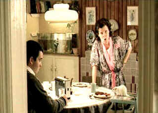

| Rat
(SE)/ C+, B |
| Universal/2000/91/ANA 1.85 |
Sustaining humor in a one joke movie is tougher than attracting rats to
a trap with no bait. Rat runs the comic maze as an Irish bakery delivery man comes home one
evening from the pub and shrinks right out of his clothes and morphs into a rat. That's right, a
rat. No, not a talking rat, but a rather attentive rat with pretty good focus at the breakfast
table and a natural affinity for a pint of stout.
 |
| A preposterous morning lecture.
©Universal |
The ins-and-outs of Rat are centered around the central joke. When
word is broadcast over a local radio station that Hubert Flynn has suddenly turned into a rat, a
local free-lance journalist spots an opportunity to make a buck and weasels his way into the Flynn
household. Between the bait of a book publishing, the Flynn family deals with a multitude of issues
salient to having a rat as head of the family. How's a daughter gonna bring her boyfriend home to
meet the folks or a son with priestly aspirations resolve his father with issues of the
bible.
Despite the mad conceit, the film is seldom funny enough. My whiskers picked up
a bit when Conchita Flynn does a wee bit of clean-up on a ragged Hubert's ruffled white hair and
there's a chase through Dublin's streets that gets under your skin.
The actors hold their through line admirably, never running complicit with the
joke. Imelda Staunton is quite a funny lady. Her Conchita scurries about with no certain purpose or
resolve lost in a maze of indecision. Pete Postlethwaite gets short screen time as Hubert, but the
rest of the cast try hard to mine the bizarre situation with straight faces.
There are several songs on the soundtrack that joyfully comment on the action.
Between Secret Love and Hucklebuck, some good additional laughs are produced.
Cinematography goes boldly where no other rat has traveled. Rat is the kind of movie I
really want to like. Outrageous humor often catches me by the tale (sic), but the single minded
nature of Rat's humor dries out far too fast.
The DVD is good enough to present the film with no barriers to pleasure.
It could have been a bit sharper. Skin tones at times appear somewhat pasty. Some of the strange
point of view shot filmed with unusual looking stock appear true to their origins. Black levels are
good, shadow detail fine. The Dolby Digital 5:1 Surround is rock solid with reasonable surround
activity. Dialogue is delivered cleanly, though you might lose a smattering of humor through
accents.
No on the fly switching to audio commentary. Along with an audio
commentary from director Steve Barron and star Imelda Staunton, there's a cut featurette detailing
aspects of production with a rye style. All those cameras just to capture a rat's point of view,
amazing technology I'd say.
|
|
|
|

Selections from the Feature Archive
include articles on Akira Kurosawa, Frank
Darabont, Blonde Bimbos, Hollywood Street Gangs, or Vietnam: The
Hollywood Pariah, and many more....

Is North by Northwest Hollywood's definitive exploration of the nose? From schnozzles to
beezeers, film mavens make the most of the foremost. Click on Mount Hitchcock for more.

The
Movie Poster Archive includes extensive poster images from the films of stars like Susan Hayward,
Kirk Douglas, Katharine Hepburn and many more. Our featured star is Doris Day.

 Have you visited Home Theater
Talk lately? One of the friendliest places on the Net for Home Theater and DVD discussion, you
can get help for installation problems or simply share your opinions with other Vidiots. Have you visited Home Theater
Talk lately? One of the friendliest places on the Net for Home Theater and DVD discussion, you
can get help for installation problems or simply share your opinions with other Vidiots.

The home of John Tisch's invaluable Poster Price Almanac. Every serious poster collector
uses the Almanac as a reference.

Excellent resource for movie review links, with many early looks.


Quite simply one of the funniest comedies ever made and the transfer is gorgeous.
|